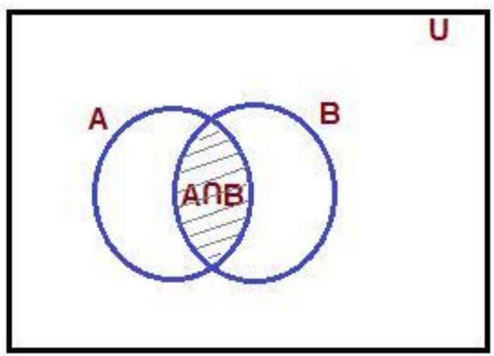
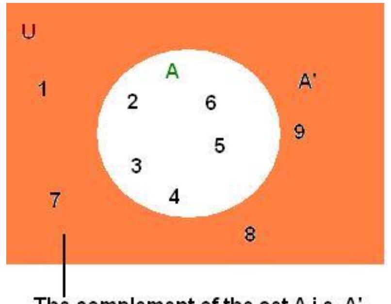
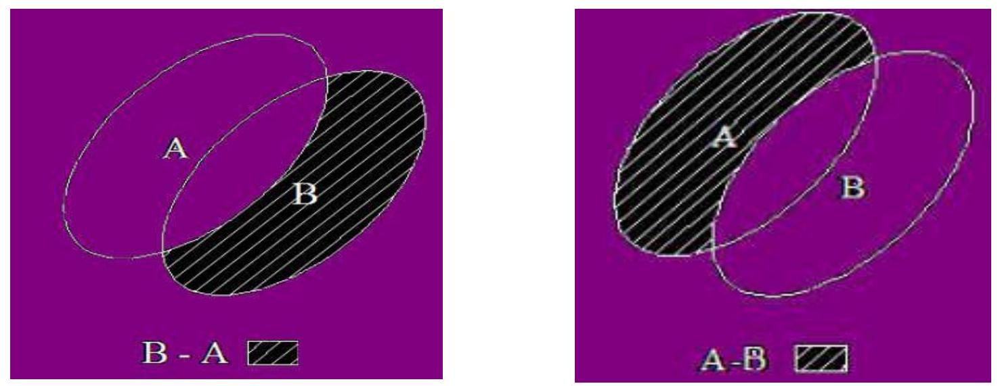
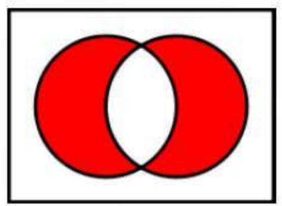

CHAPTER 3: LOGIC GATES AND BOOLEAN ALGEBRA (Continued)
Intersection of Sets (Continued)
Intersection of Two Sets
The intersection of two sets is the set of all the elements of two sets that are common in both of them. If we have two sets A and B, then the intersection of them is denoted by A $\cap$ B and it is read as A intersection B .
Let $\mathrm{X}=\{2,3,8,9\}$ and $\mathrm{Y}=\{5,12,9,16\}$ are two sets.
Now, we are going to understand the concept of Intersection of set. It is represented by the symbol " $\cap$ ".
If we want to find the intersection of $A$ and $B$, the common part of the sets $A$ and $B$ is the intersection of A and B. It is represented as A $\cap$ B. That is, if an element is present in both A and B, then that will be there in the intersection of A and B. It will be more clear with the below figure.
Let A and B are two sets. Then, the intersection of A and B can be shown as below.
The intersection of A and B is denoted by A $\cap$ B.
Thus, $\mathrm{A} \cap \mathrm{~B}=\{\mathrm{x}: \mathrm{x} \in \mathrm{~A}$ and $\mathrm{x} \in \mathrm{~B}\}$.
Clearly, x $\in$ A $\cap$ B i.e., x $\in$ A and x $\in$ B
In the above figure, the shaded area represents A $\cap$ B.
In the same way, if $A_{1}, A_{2}, \ldots . . . . ., A_{n}$ is a finite family of sets, then their intersection is represented by $\mathrm{A}_{1} \cap \mathrm{~A}_{2} \cap . . . . . \cap \mathrm{~A}_{\mathrm{n}}$.
Intersection of Convex Sets
In a Vector space, a set is called convex set if all the elements of the line joining two points of that set also lies on that set. In other words, we can say that the set $S$ is convex set if for any points x , $y \in S$, there are no points on the straight line joining points x and y are not in the set S.
The intersection of two convex set is again a convex set. We can prove it with the help of contradiction method. So, lets suppose that A and B are the two convex sets. And, let we have two points $x$ and $y$ in such a way that $x \in A \cap B$ and $y \in A \cap B$, then $x \in A, x \in B, y \in A$ and $y \in B$ and there exists a point z in such a way that z is not in A or B or both. This is the contradiction of our assumption that A and B are the convex sets. So there is no such point $x, y$ and z can exists and A $\cap$ B is a convex set.
Intersection of Three Sets
If we have $A, B$ and $C$ , then the intersection of these three sets are the set of all elements $A, B$ and $C$ that are common in these three sets.

Solved Example
Question:
If we have $A=\{1,3,5,7,6,8\}, B=\{2,4,6,8,9\}$ and $C=\{1,3,6,8\}$, then find the $A \cap B \cap C$.
Solution:
Given that $\mathrm{A}=\{1,3,5,7,6,8\}, \mathrm{B}=\{2,4,6,8,9\}$ and $\mathrm{C}=\{1,3,6,8\}$.
Then, it is clear that the elements 6 and 8 are common in all the three given sets.
Hence, we get $\mathrm{A} \cap \mathrm{B} \cap \mathrm{C}=\{6,8\}$.
Intersection of Open Sets
Every intersection of open sets is again an open set. Let us have two open sets $A_{1}$ and $A_{2}$. If the intersection of both of them is empty and empty set is again an open set. Hence, the intersection is an open set.
If $A_{1}$ and $A_{2}$ are open sets, then there exists some $x \in A_{1} \cap A_{2}$. Since the given sets are open, we have some $r_{1}$ and $r_{2}$ in such a way that $B_{r_{1}}(x) \subset A_{1}$ and $B_{r_{2}}(x)\subset A_{2}$. So, we can choose a number $r = \min(r_1, r_2)$ such that $B_{r}(x)\subset A_{1}\cap A_{2}$.
So, we can say that if the intersection is not empty, then by the use of definition of intersection and non emptiness, there exists any $x \in A_{i}$ for all $A_{i}$ 's, where all $A_{i}$ 's are open sets. Then, we have $B_{r_{i}}(x)\subset A_{i}$ for some $r_{i}>0$.
Complement of a Set
In set theory, complement set is one of the branch. Set of all elements in the universal set that are not in the initial set are said to be complement set. The complement of a set is represented by the symbol A'. The set is a collection of the object. Set is denoted by the symbols $\{\}$. In this article, we see in detail about the complement set.
Complement of a Set Definition
If we have a set $A$, then the set which is denoted by $U-A$, where $U$ is the universal set is called the complement of A. Thus, it is the set of everything that does not belong to A. So, the complement of a set is the set of those elements which does not belong to the given set but belongs to the universal set $U$. Mathematically, we can show it as $A^c = \{x \mid x \notin A \text{ but } x \in U\}$
Since we know that every set is the subset of the universal set U , then the complementary set is also the subset of U . The total number of elements in the complementary set is equal to the difference between the number of elements of the set $U$ and the number of elements of the given set (say A). If $A$ is the given set, then the complement of $A$ is denoted as $A^{c}$ or $A^{\prime}$.
For example, $\mathrm{U}=\{1,2,3,4,5,6,7,8,9\}$ and a set $\mathrm{A}=\{2,3,4,5,6\}$. Then, the complement of $A$ is denoted by $A^{c}$ or $A^{\prime}$.
$A^{c}=\{1,7,8,9\}$. We can show this with the help of Venn diagram
The complement of the set $A$ i.e. $A^{\prime}$
Complement of a Set Example
Given below are some of the examples on complement of a set.
Solved Examples
Question 1: Value of set $\mathrm{U}=\{2,4,6,7,8,9,10\}$ and $\mathrm{A}=\{7,8,9,10\}$ and $\mathrm{B}=\{8,9,10\}$. Find the complement of A , complement of B , complement of A union B .
Solution:
Step 1: Given
$\mathrm{U}=\{2,4,6,7,8,9,10\}$
$\mathrm{A}=\{7,8,9,10\}$
$B=\{8,9,10\}$
Step 2: The element of set $U$ is $\{2,4,6,7,8,9,10\}$. The element that does not belong to $A$ is $\{2,4,6\}$. Complement of A is $\{2,4,6\}$.
Step 3: Complement of $B$ is $\{2,4,6,7\}$
Step 4: $A \cup B = \{7,8,9,10\}$. Complement of $A \cup B$ is $\{2,4,6\}$.
Question 2: Values of set $\mathrm{U}=\{3,5,7,8,9,10,12\}$ and $\mathrm{A}=\{8,9,10,12\}$. Find the compliment of A.
Solution:
Step 1: Given
$\mathrm{U}=\{3,5,7,8,9,10,12\}$
$\mathrm{A}=\{8,9,10,12\}$
Step 2: The element of set $U$ is $\{3,5,7,8,9,10,12\}$. Elements $\{3,5,7\}$ does not belong to the set A. So, $A^{\prime}=\{3,5,7\}$
Step 3: Complement of $A$ is $\{3,5,7\}$.
Question 3: Values of set $\mathrm{U}=\{1,4,6,7,8,10\}$ and $\mathrm{A}=\{6,7,8\}$. Find the complement of $A$
Solution:
Step 1: Given
$\mathrm{U}=\{1,4,6,7,8,10\}$
$\mathrm{A}=\{6,7,8\}$
Step 2: The element of set $U$ is $\{1,4,6,7,8,10\}$. Elements $\{1,4,10\}$ does not belong to the set A. $\mathrm{A}^{\prime}$ is $\{1,4,10\}$.
Step 3: Complement of A is $\{1,4,10\}$.
Set Difference
Here, we are going to learn about an operation on set called difference of sets. In mathematics, a set can have a limited number of elements. Set is a collection of data. We can perform many operations on set. The difference operation is one of them. The subtract(difference) symbol in the function represents the removal of the values from the second set from the first set. The operation of subtraction is a removing or taking away objects from group of object.
Difference of Two Sets
Difference of sets is defined as a method of rearranging sets by removing the elements which belong to another set. Difference of sets is denoted by either by the symbols - or $\backslash$. P minus Q can be written either $\mathbf{P}-\mathbf{Q}$ or $\mathbf{P} \backslash \mathbf{Q}$.
The differences of two sets $P$ and $Q$, is written as $P-Q$, It contains elements of $P$ which are not present in elements of $\boldsymbol{Q}$. Here, result $P-Q$ is obtained. Take set $P$ as usual and compare with set Q . Now, remove those element in set P which matches with set Q . If $\mathrm{P}=\{\mathrm{a}, \mathrm{b}, \mathrm{c}, \mathrm{d}\}$ and $Q =\{d, e\}$, then $P-Q=\{a, b, c\}$.
Definition for difference of sets
The difference between two sets $A$ and $B$ are represented in the order as the set of all those elements of A which are not in B. It is denoted by A - B.
In symbol, we write it as
$\mathrm{A}-\mathrm{B}=\{\mathrm{x}: \mathrm{x} \in \mathrm{~A}$ and $\mathrm{x} \notin \mathrm{~B}\}$
Similarly $B - A = \{\mathrm{x}: \mathrm{x} \in \mathrm{~B}$ and $\mathrm{x} \notin \mathrm{~A}\}$.
By representing it in the Venn diagram,
Symmetric Difference of Sets
If we have two sets $A$ and $B$, then the symmetric difference of these two sets $A$ and $B$ is the set of all elements those are either in A or in B not in both sets. So, we can say that the symmetric difference of two sets is the union without the intersection. We can use the symbol $\triangle$ for this and denoted as follows:
$A \triangle B = \{x \mid (x \in A \land x \notin B) \lor (x \notin A \land x \in B)\}$
Symmetric Difference of Sets $A \triangle B$
The symmetric difference of sets is associative. So, if we have three sets $A, B$ and $C$, then $(A \triangle B) \triangle C = A \triangle(B \triangle C)$
The symmetric difference of two sets is commutative i.e. for all sets A and B, we have $A \triangle B = B \triangle A$
Set Difference Examples
Given below are some of the problems based on difference of sets.
Solved Examples
Question 1: Consider the two sets $A=\{11,12,13,14,15,16\}, B=\{12,14,16,18\}$. Find the difference between the two sets?
Solution:
Given $\mathrm{A}=\{11,12,13,14,15,16\}$
$B=\{12,14,16,18\}$
$A-B=\{11,13,15\}$
$\mathrm{B}-\mathrm{A}=\{18\}$
The set of all elements are present in A or in B. But, not in both is called the symmetric difference set.
Question 2: $\mathrm{A}=\{2,3,4,1,8,9\}$ and $\mathrm{B}=\{2,3,4,1,8,, 12\}$. What is $\mathrm{A}-\mathrm{B}$ and $\mathrm{B}-\mathrm{A}$ ?
Solution:
Given $\mathrm{A}=\{2,3,4,1,8,9\}$
$B=\{2,3,4,1,8,12\}$
Here, all elements of A is available in B except 9 .
So, the difference $\mathrm{A}-\mathrm{B}=\{9\}$.
Here, all elements of B are available in A except 12.
So, the difference $\mathrm{B}-\mathrm{A}=\{12\}$.
Question 3: Consider two sets $A=\{a, b, f, g, h\}, B=\{f, g, a, k\}$. Find $A-B$ and $B-A$ ?
Solution:
Given $\mathrm{A}=\{\mathrm{a}, \mathrm{b}, \mathrm{f}, \mathrm{g}, \mathrm{h}\}$
$B=\{f, g, a, k\}$ So, $A-B=\{b, h\}$ and $B-A=\{k\}$
Question 4: Consider given sets $P=\{19,38,57,76,95\}$ and $Q=\{7,19,57,75,94\}$. Find $P - Q$ and $Q - P$ .
Solution:
Given $\mathrm{P}=\{19,38,57,76,95\}$
$\mathrm{Q}=\{7,19,57,75,94\}$ So, $P-Q=\{38,76,95\}$ and $\mathrm{Q}-\mathrm{P}=\{7,75,94\}$